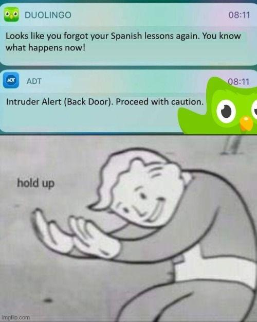
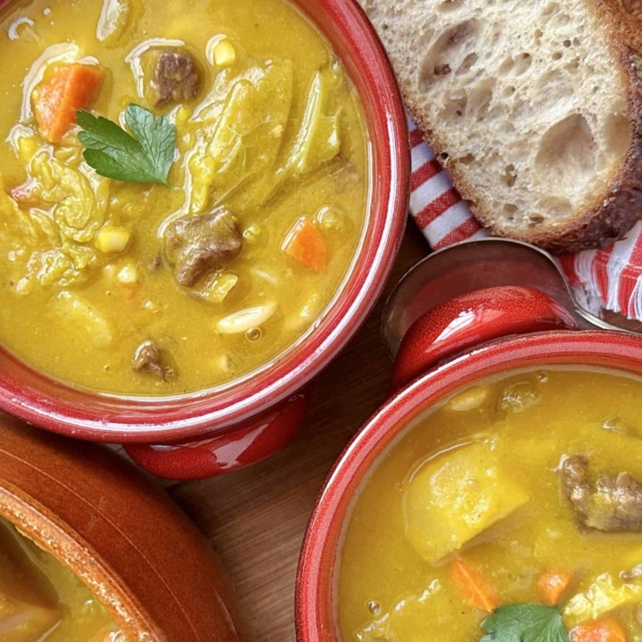
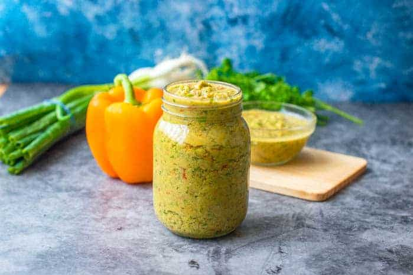

My Language Learning Journey!
So far, I have learned three languages on my own: Korean, Japanese, Spanish, & French (High School) . I don't remember much of that one.
I began this journey my freshman year of college. We were on break, and I wanted to do something effective with my time off from school. I was always someone who enjoyed learning, whether it be cultures, people, especially food, or anything out of the norm for me.
Korean
여러분, 안녕하세요! 내 이름은 라크완다입니다.
= Hello everyone! My name is Laqwanda.
The first language I chose was Korean because I wanted to learn something completely foreign to me. I believe education should be free, and being a college student [should I say more], I looked up any resources that could offer me that. I stumbled across websites like talktomeinKorean, Korean in plain English. Later, I became really immersed in the language and culture. I found shows that I loved: Running Man, The Return of Superman, and Eat Your Kimchi with Simon and Martina. The food and history drew me in, and I learned the best way to get to know someone is to talk to them, or, should I say, learn how to.
Japanese
こんにちは、みんな！私はラクワンダです。
= Hello everyone! I'm Laqwanda.
My next adventure landed me in Japan. Japanese was a bit more challenging than Korean because of the two or rather, three different alphabets: hiragana, katakana and kanji. Although it was a more challenging language, thanks to learning Korean, I was able to have a solid foundation in my approach. Japanese wasn’t as foreign to me as Korean was because I grew up watching anime and shows like - DBZ, Takeshi’s Castle, and Ninja Warrior. The resource I used mostly was
NHK Japan
.
Spanish

¿Qué lo que, cómo va todo?
= What’s up? How’s everything?
My current adventure is Spanish; I found this one to be the easiest of the three but still challenging enough. Spanish has so many dialects that it is very hard to decide which one to choose. I personally prefer Caribbean Spanish—Puerto Rican, Dominican, and Cuban. Most resources are centered around Spain’s Spanish, so that’s something you would have to pay attention to.
Resources:
Bilingue Blogs
, Complete Spanish Step by Step (book), and Duolingo.
Summary
To summarize, I genuinely love learning languages because they teach about the people, their food, and cultures. So what language have you learned or would like to?
Soup Joumou: A Taste of Freedom!

Did you know that a soup could represent freedom? Well, since January 1, 1804, it has been true for many Haitian households. Originally reserved for slave owners, Haitians took ownership of the soup when they gained independence from France, turning it into a symbol of their newly acquired freedom and an expression of their dignity and resilience.
I love when fall begins, the temperatures drop, and it is time to dress in comfy clothing and warm up with your favorite bowl of soup. One of my favorite soups is called Soup Joumou, a Haitian pumpkin-based soup with beef, pasta, and many vegetables. It starts with Epis.
Epis is a seasoning base consisting of peppers, garlic, and herbs.
Starting With Epis:

- 1 bunch Parsley
- 1 bunch Cilantro
- 1 head Garlic
- 2 bulbs Green Onion
- 1/2 Onion
- 1 medium Green Bell Pepper
- 1 medium Red Bell Pepper
- 1 TBSP Adobo Seasoning
- 1/2 TBSP Black Pepper
- 1-2 TBSP Apple Cider Vinegar
- 1/2 Cup Oil
- 3 Habanero Peppers
- 1 TBSP Chicken Bouillon Powder
- 2 Stalks Celery
Instructions:
- Step 1:
-
Clean each vegetable throughly. Then cut in nice size chuncks that will fit in a food proccessor.
- Step 2:
-
Process in batches and season TT (to taste).
- Step 3:
-
Put in air tight container and cover with oil of choice and refrigerate for 1-3 months.
- Notes:
-
This is not an authentic recipe; it's customized to the ingredients available around me. Customize to your own taste.
Soup Joumou:
Ingredients
- 1 lb Beef Stew Meat
- 1/2 cup Oil
- Water as needed
- 1 large Green Onion, diced
- 1/2 medium Cabbage, diced
- 2 Potatoes, peeled and chopped
- 2 Butternut Squash, peeled and chopped
- 1 stalk Celery, chopped
- 3 medium Carrots, chopped
- 1 6oz package Spagetti
- 1 TBSP Tomato Paste
- 1 Habanero
- 4 sprigs Parsley
- 1 tsp Black Pepper
- 1 tsp Thyme
- 2 Shallots, diced
- 1 tsp Seasoning Salt
- 1 1/2 TBSP Chicken Bouillon Powder
- 1 tsp Garlic Powder
- 1 tsp Onion Powder
- 1 TBSP Epis
-
Additional/Substitute ingredient if avaliable where you live:
- 2 Yams, peeled and chopped
- 2 Malangas, peeled and chopped
- 2 Turnips, peeled and chopped
- 1 Scotch Bonnet Pepper
Instructions:
-
Clean your meat. Then season your meat with list of ingredients starting from Black pepper down to Epis. Let Marinate overnight or at least 1 hour.
-
Add the oil and sear the meat. Then add enough water to cover it.
-
Bring water to a boil then lower the fire to a medium high. Keep covered until water evaporates.
-
Stir in 1 TBSP of tomato paste. Remove meat and set aside.
-
Prep and clean vegetables. Add the squash to a pot of water bring to a boil. When it's fork tender remove and place in a blender or food processor.
-
Add other vegetables in the pot that was used for the meat. Pour in the squash puree and water as needed. Boil for about 30 minutes.
-
Reduce heat and add Habanero.
-
Add parsley, thyme, and broken spagetti (or substitute with rigatoni).
-
Add meat back into pot. Let it all cook, until tender.
-
Serve with french bread and a slice of lime.